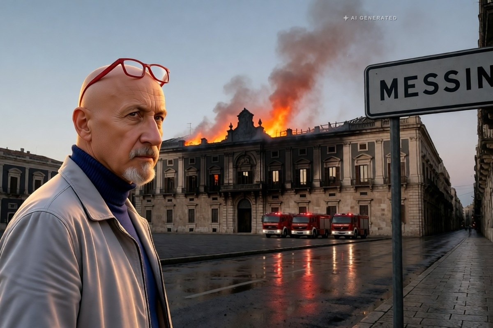

Cronaca · 6 novembre 2026
Messina, il tetto della Camera di commercio crollato nell'incendio

Le fiamme sono partite dal sottotetto di uno dei palazzi simbolo della città ricostruita dopo il terremoto del 1908. La procura ha sequestrato il terzo piano e parte della copertura. Nessun ferito.
di Franco Zanghì
Il palazzo della Camera di commercio, in piazza Felice Cavallotti, non è un edificio qualunque: è uno dei simboli della Messina rinata dopo il terremoto del 1908, progettato da Camillo Puglisi Allegra e nato da un concorso del 1926. Nel pomeriggio del 5 novembre, intorno alle 15, dal sottotetto dell'ala su via Giordano Bruno sono uscite le fiamme. L'incendio è stato domato soltanto dopo una notte di lavoro.
I danni
Il fuoco ha attaccato le capriate di legno e gran parte del tetto è crollata. Al terzo piano si trovavano gli uffici dell'Irsap, del Consorzio di bonifica e di Confagricoltura; la sede di Confagricoltura, secondo quanto riferito, è andata distrutta. I danni arrivano fino al Salone della Borsa, restaurato due anni fa. Sono intervenute almeno cinque squadre dei vigili del fuoco; il palazzo è stato evacuato su allarme dei dipendenti e nessuno è rimasto ferito. I quadri di valore sono stati portati in salvo al MuMe, il Museo regionale.
Il presidente della Camera di commercio, Ivo Blandina, ha parlato di danni «ingenti» e ha rimandato alle indagini dei vigili del fuoco, che stenderanno un rapporto.
Le fiamme sono state viste uscire dal sottotetto e si sono propagate lungo la copertura, alimentate dal legno delle capriate. Le squadre hanno lavorato per tutta la notte, prima dall'alto con le autoscale e poi all'interno, e l'incendio è stato dichiarato domato soltanto la mattina successiva. La conta dei danni è cominciata appena il palazzo è stato messo in sicurezza, e riguarda sia le strutture sia gli archivi e gli arredi degli uffici del terzo piano.
Le indagini
Le cause restano da accertare. Non si esclude un corto circuito, e c'è un dettaglio che pesa: in quell'area, secondo LiveSicilia, erano in corso lavori agli impianti di climatizzazione. La procura ha disposto il sequestro del terzo piano e di parte del tetto, per consentire gli accertamenti. Alcuni residenti hanno presentato un esposto in procura sollevando dubbi sull'organizzazione dei soccorsi e sulla sicurezza dell'edificio.
Il punto
Il Salone della Borsa era stato restaurato due anni fa: soldi, lavoro, cura. È bastato un pomeriggio per rimettere tutto in discussione. Restano due domande, e nessuna delle due è retorica: che cosa ha innescato le fiamme, e quanto sono davvero protetti gli edifici storici delle nostre città quando dentro ci sono cantieri aperti.
Il palazzo ospita, oltre alla Camera di commercio, uffici di enti regionali e di associazioni di categoria: il sequestro del terzo piano e di parte del tetto significa che quelle attività restano fuori dalla loro sede finché gli accertamenti non saranno conclusi.
Fonti
- Giornale di Sicilia, «Incendio alla Camera di Commercio di Messina, la Procura sequestra l'ultimo piano del palazzo», 6 novembre 2026
- Gazzetta del Sud, «Incendio alla Camera di commercio, esposto in Procura di alcuni residenti», 6 novembre 2026
- LiveSicilia, «Messina, domato il devastante incendio alla Camera di Commercio», 6 novembre 2026
- MessinaToday, «Camera di commercio devastata dall'incendio, cosa sappiamo finora»
Le cause dell'incendio non sono accertate: l'ipotesi del corto circuito e il collegamento con i lavori agli impianti sono ricostruzioni riportate dalle testate locali, in attesa del rapporto dei vigili del fuoco e degli accertamenti della procura.